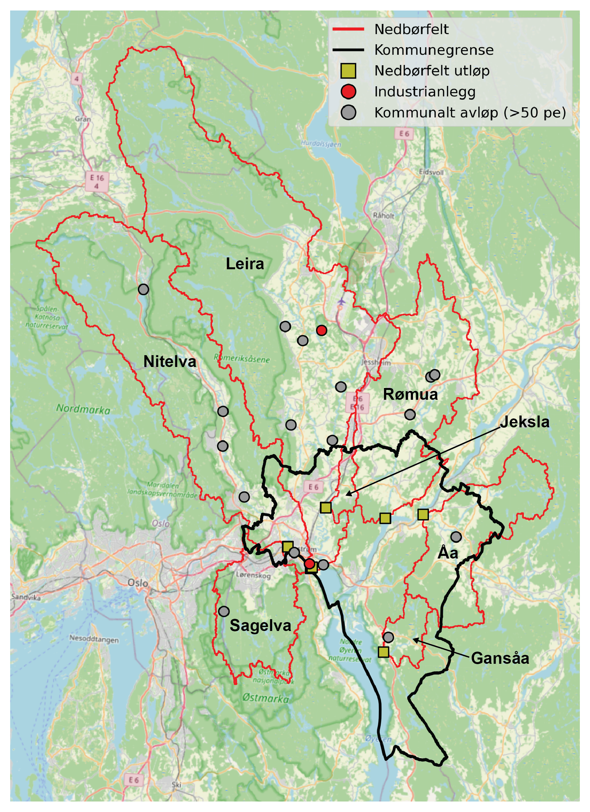
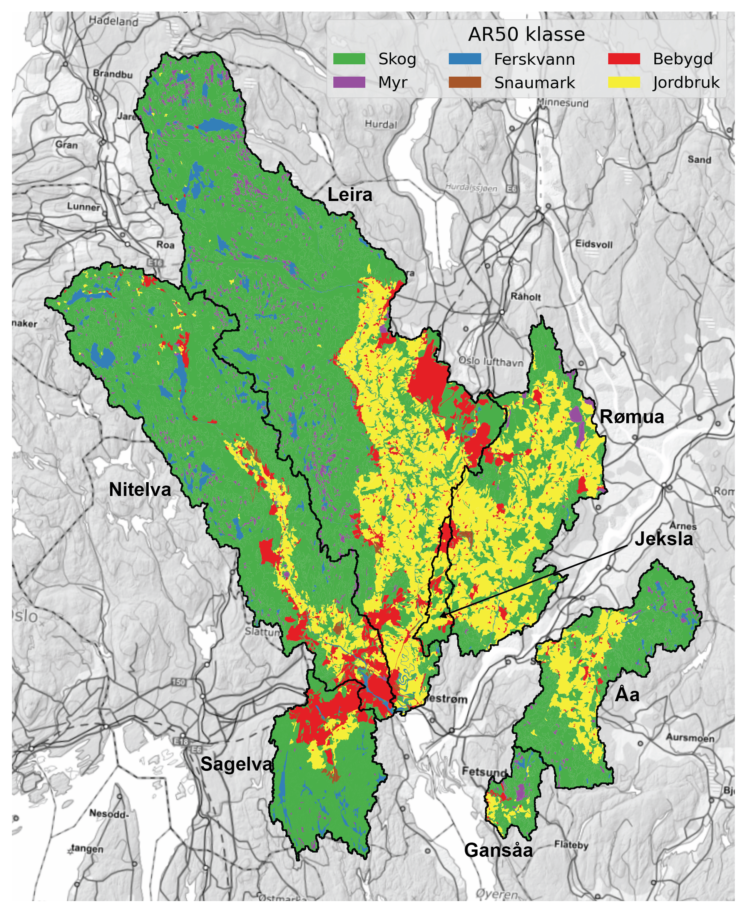

| Nedbørfelt | Sagelva | Nitelva | Leira | Rømua | Jeksla | Åa | Gansåa | |||||||
|---|---|---|---|---|---|---|---|---|---|---|---|---|---|---|
| AR50 klasse | km² | % | km² | % | km² | % | km² | % | km² | % | km² | % | km² | % |
| Bebygd | 17.6 | 16 | 45.3 | 9 | 46.5 | 7 | 9.8 | 5 | 3.8 | 22 | 2.0 | 2 | 0.8 | 3 |
| Jordbruk | 6.8 | 6 | 36.1 | 8 | 132.0 | 20 | 103.3 | 49 | 6.6 | 39 | 29.6 | 23 | 3.4 | 13 |
| Skog | 77.0 | 71 | 363.9 | 75 | 436.0 | 65 | 92.9 | 44 | 6.5 | 38 | 93.8 | 72 | 18.6 | 73 |
| Snaumark | 1.2 | 1 | 3.8 | 1 | 2.2 | 0 | 1.2 | 1 | 0.1 | 1 | 0.0 | 0 | 0.1 | 0 |
| Myr | 0.7 | 1 | 9.1 | 2 | 27.6 | 4 | 4.1 | 2 | 0.0 | 0 | 3.0 | 2 | 1.8 | 7 |
| Ferskvann | 5.6 | 5 | 25.7 | 5 | 23.8 | 4 | 0.5 | 0 | 0.0 | 0 | 2.3 | 2 | 0.7 | 3 |
| Totalt | 108.9 | 100 | 483.9 | 100 | 668.1 | 100 | 211.8 | 100 | 17.0 | 100 | 130.7 | 100 | 25.4 | 100 |
TEOTIL3 Lillestrøm
0.1 Scope
This project aims to:
Summarise available monitoring data for catchments around Lillestrøm kommune.
Describe present-day water quality status and observed trends over time.
Use modelling to identify the main sources of nutrients in each catchment.
Describe the potential for reducing nutrient loads in each catchment using measures targeting wastewater and agriculture (based on recent modelling of the Oslofjord catchment undertaken by NIVA and NIBIO for Miljødirekotratet).
0.2 Area of interest
Table 1 and Figure 1 show the catchments of interest.
| Catchment ID | Name | Outlet lon | Outlet lat | Comment |
|---|---|---|---|---|
| 1 | Sagelva | 11.02384 | 59.95745 | Tributary to Nitelva |
| 2 | Nitelva | 11.07092 | 59.93806 | Just upstream of confluence with Leira |
| 3 | Leira | 11.07367 | 59.93905 | Just upstream of confluence with Nitelva |
| 4 | Rømua | 11.20984 | 59.99055 | Single REGINE; no lakes |
| 5 | Jeksla | 11.09281 | 59.99753 | Small sub-catchment of Leira; not resolved by REGINE network |
| 6 | Åa | 11.28279 | 59.99649 | Single REGINE; few lakes |
| 7 | Gansåa | 11.22130 | 59.86080 | Not resolved by REGINE network |

0.3 Sources of nutrients
0.3.1 Diffuse sources
Table 2 and Figure 2 show land cover proportions for each catchment.
Forest is the dominant land cover (≥65 %) for Leira, Nitelva, Sagelva, Åa and Gansåa.
Agriculture is the dominant land cover class for Rømua (49 %) and Jeksla (39 %), and also covers significant parts of Leira (20 %) and Åa (23 %).
Sagelva and Jeksla have significant urban areas (16 % and 23 %, respectively).

0.3.2 Point sources
Major point sources are shown in Table 3. Nutrient inputs are the mean of reported discharges during the period from 2013 to 2023 (in tonnes).
The largest single point source is Nedre Romerike avløpsanlegg (NRA), which discharges to Nitelva just upstream of the confluence with Leira. Other significant wastewater discharges to Nitelva are renseanleggene at Rotnes and Åneby, further upstream. In Leira, significant wastewater discharges include Gardermoen sentralrenseanlegg and Kløfta renseanlegg, both in the lower-central part of the catchment.
The largest industrial point source is Dynea Lillestrøm, a manufacturer of adhesives and industrial coatings.
| Nedbørfelt | Navn | Sektor | Type | TOTN (tonn) | TOTP (tonn) | TOC (tonn) | SS (tonn) |
|---|---|---|---|---|---|---|---|
| Sagelva | Mariholtet sportsstue, renseanlegg | Kommunalt avløp (>50 pe) | Naturbasert | 0.01 | 0.00 | 0.01 | 0.01 |
| Nitelva | Dynea Lillestrøm | Industrianlegg | Kjemisk industri | 27.89 | 0.12 | 18.13 | 5.99 |
| Nitelva | NRA (Nedre Romerike avløpsanlegg) | Kommunalt avløp (>50 pe) | Kjemisk-biologisk m/N-fjerning | 180.39 | 5.21 | 218.70 | 154.27 |
| Nitelva | Rotnes renseanlegg | Kommunalt avløp (>50 pe) | Kjemisk | 24.59 | 0.39 | 20.76 | 16.04 |
| Nitelva | Slattum renseanlegg (Nedlagt) | Kommunalt avløp (>50 pe) | Kjemisk | 25.25 | 0.42 | 54.56 | 30.44 |
| Nitelva | Åneby renseanlegg | Kommunalt avløp (>50 pe) | Kjemisk | 18.14 | 0.15 | 12.47 | 6.73 |
| Nitelva | Harestua renseanlegg | Kommunalt avløp (>50 pe) | Kjemisk-biologisk | 11.39 | 0.13 | 6.50 | 12.45 |
| Leira | Tuen renseanlegg (Nedlagt) | Kommunalt avløp (>50 pe) | Kjemisk | 0.01 | 0.00 | 0.01 | 0.01 |
| Leira | Kløfta renseanlegg | Kommunalt avløp (>50 pe) | Kjemisk | 36.32 | 0.18 | 38.07 | 15.61 |
| Leira | Avinor avd. Oslo Lufthavn Gardermoen | Industrianlegg | Flyplass | nan | nan | 1.27 | nan |
| Leira | Gardermoen sentralrenseanlegg | Kommunalt avløp (>50 pe) | Kjemisk-biologisk m/N-fjerning | 48.34 | 1.03 | 36.47 | 46.68 |
| Leira | Gjerdrum renseanlegg (Nedlagt) | Kommunalt avløp (>50 pe) | Kjemisk | 17.72 | 0.07 | 14.74 | 12.15 |
| Leira | Åsgreina renseanlegg (Nedlagt) | Kommunalt avløp (>50 pe) | Kjemisk | 1.58 | 0.02 | 1.61 | 1.41 |
| Leira | Fagerli renseanlegg | Kommunalt avløp (>50 pe) | Biologisk | 0.36 | 0.04 | 0.27 | 0.38 |
| Rømua | Onsrud leir renseanlegg | Kommunalt avløp (>50 pe) | Kjemisk-biologisk | 0.18 | 0.00 | nan | 0.14 |
| Rømua | Onsrud rekkehus | Kommunalt avløp (>50 pe) | Kjemisk-biologisk | 0.12 | 0.00 | 0.06 | 0.10 |
| Rømua | Ingjersmyr avløpsanlegg | Kommunalt avløp (>50 pe) | Kjemisk-biologisk | 0.12 | 0.00 | 0.04 | 0.09 |
| Åa | Hogset renseanlegg (Nedlagt) | Kommunalt avløp (>50 pe) | Kjemisk-biologisk | 3.13 | 0.02 | 1.03 | 1.66 |
| Gansåa | Dalen renseanlegg | Kommunalt avløp (>50 pe) | Kjemisk | 3.07 | 0.03 | 1.41 | 2.46 |